P02R · 포스 화면 · 통과1 접수·예약 (카드 목록 · 확정 배치)
채택한 카드 목록을 docs/38 7-5 배치(금액과 버튼 한 줄, 쪽마다 제목 한 줄)로 다시 그림. 목록 화면의 기준.
판단: 확정 배치대로 나옴: 제목 한 줄, 온전한 카드 4장, 금액과 버튼이 한 줄, 품목 많은 카드는 '외 4종'으로 끝남. 헤더(매장명·알림 종·나가기)와 레일 9개 완전. 목록 화면의 기준으로 사용.
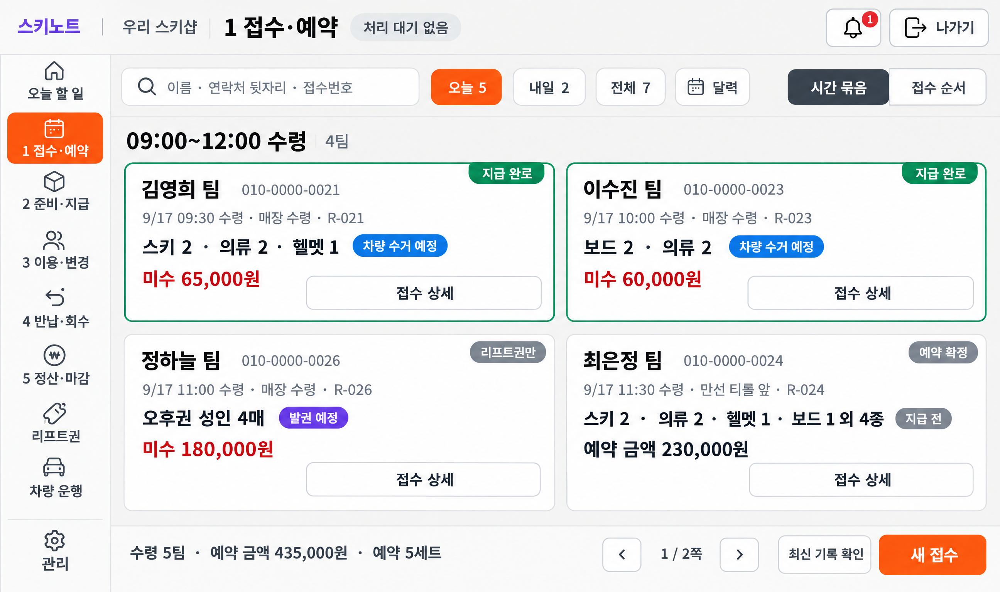
job c3a5f3bd-6b54-4e0d-a37c-1f2fcb6522fe · 힉스필드 원본
M01 · 관리 · 통과관리 허브
관리 영역의 기준 화면. 관리 레일 7개를 여기서 정한다.
판단: 관리 레일 7개(포스로 · 재고·정비 · 거래처 장부 · 고객 관리 · 매장 설정 · 인쇄물 · 마감 이력) 순서 정확, 강조 없음. 타일 6개 문구 일치, 마감 이력만 빨간 테두리. 관리 화면의 기준으로 사용.
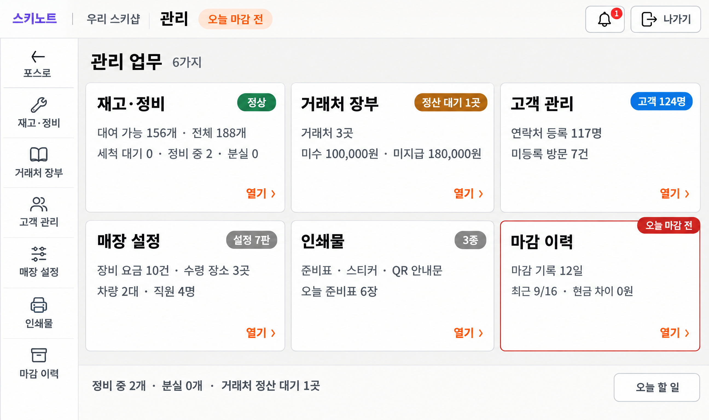
job ebc4a6ca-2d86-473f-a84a-74a08261a65f · 힉스필드 원본
P20 · 팝업 · 통과팝업 · 지급 확정
팝업의 기준 화면. 부모 화면은 2 준비·지급.
판단: 부모 화면(2 준비·지급)이 어둡게 깔리고 팝업에 제목·부제·닫기, 품목 3줄의 −/+ 수량, 미수 줄과 수납 버튼, 주황 확정 버튼 하나. 팝업의 기준으로 사용.
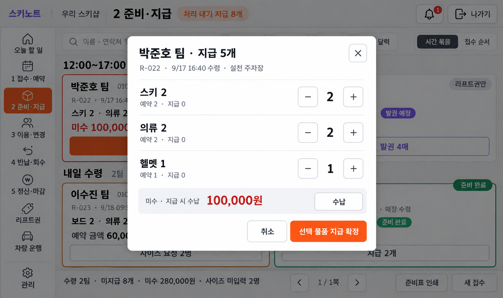
job de333b51-84be-4955-a684-3fee0e3eddd5 · 힉스필드 원본
D01 · 기사 태블릿 · 통과기사 태블릿 · 차량 운행
기사 화면의 기준. 레일 없음, 보라색, 행 목록(카드 아님).
판단: 레일 없음, 보라색 강조, 카드가 아닌 행 4줄과 쪽수, 행마다 보라 '업무 처리'. 하단에 주 버튼 없음. 기사 화면의 기준으로 사용.
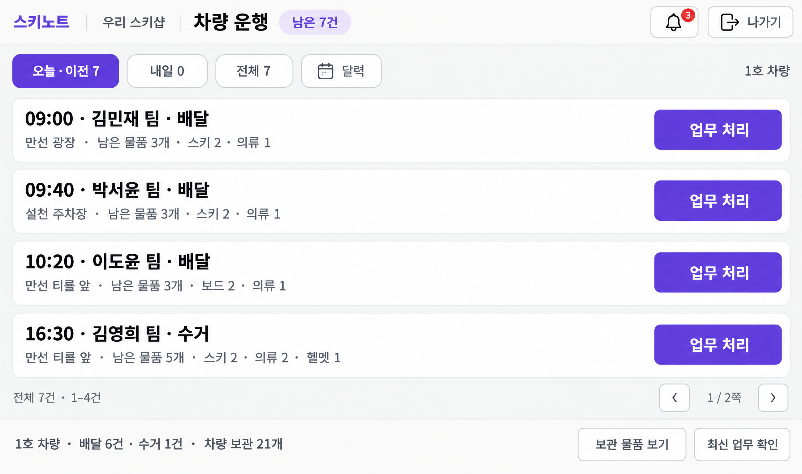
job 27c00e31-e89a-4c9c-b8f1-a7628c8da874 · 힉스필드 원본
P11 · 포스 화면 · 통과새 접수 · 1 고객
끝 4자리로 고객을 찾고 고른다. 타이핑 대신 숫자판.
판단: 끝 4자리 표시와 숫자판(지우기·찾기), 찾은 고객 2명 중 선택 표시, 새 고객 등록, 하단 '다음 · 품목'. 레일·헤더 완전.
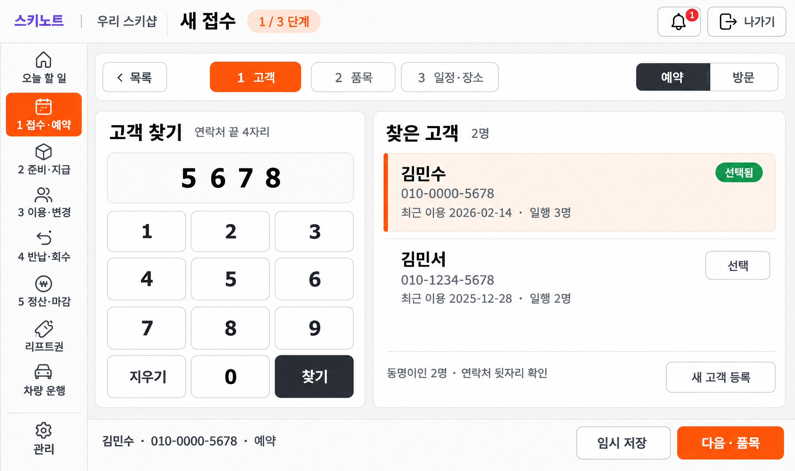
job d2b5a7eb-74c0-4dc7-971c-d56f2665f611 · 힉스필드 원본
P12 · 포스 화면 · 통과새 접수 · 3 일정·장소
날짜·시간·장소를 큰 선택 버튼으로 고른다. 오른쪽에 접수 요약과 합계.
판단: 수령일·수령 시간·수령 장소·반납 시간을 큰 선택 버튼으로, 오른쪽 접수 요약과 합계 105,000원, 하단 '접수 확정 · 105,000원'.
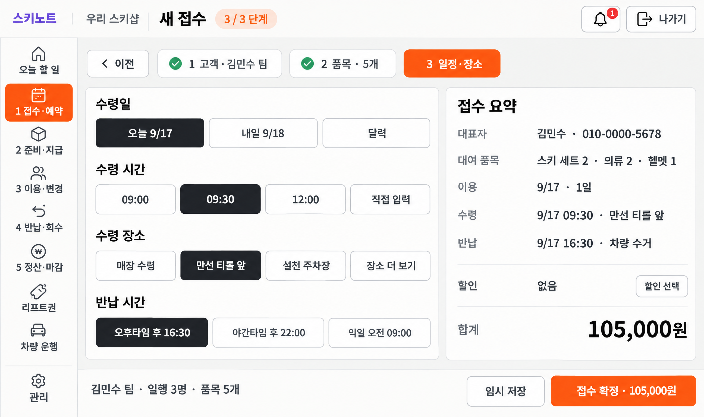
job a4c65fbc-af99-4d4c-87bb-70f58ba680b5 · 힉스필드 원본
P13 · 포스 화면 · 통과새 접수 · 일행마다 다르게 입력
단체 접수. 왼쪽 일행 목록(쪽수), 오른쪽 품목 버튼. 같은 품목은 한 번에 채운다.
판단: 왼쪽 일행 목록 5줄과 쪽수(1 / 6쪽), 오른쪽 품목 버튼 6개, '앞사람과 같게'·'남은 27명 모두 같게', 하단 '다음 일행 · 4 최유나'.
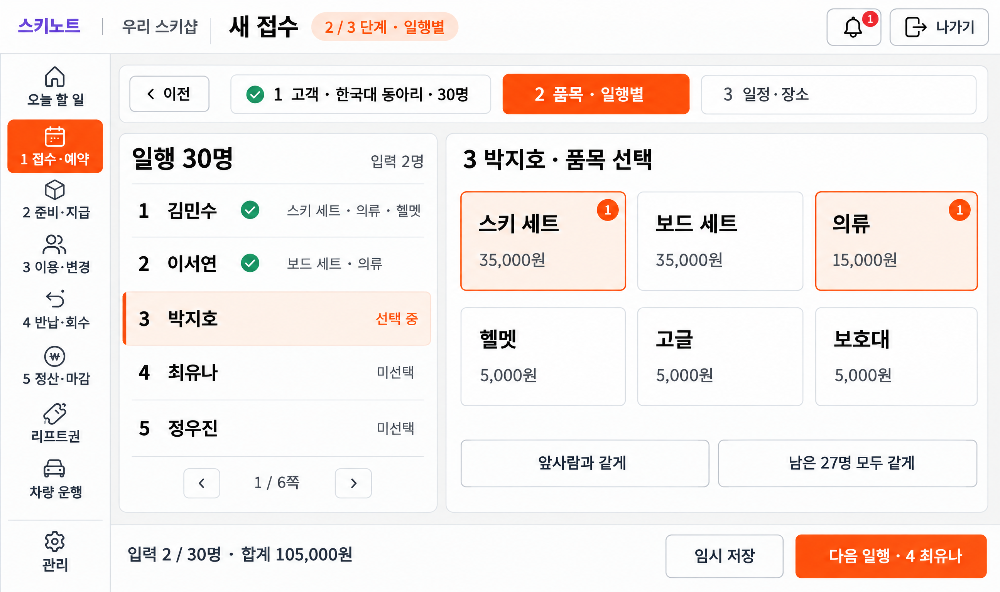
job 8282048c-621c-44dd-9b40-830a325fb1bc · 힉스필드 원본
P09 · 포스 화면 · 통과리프트권
발권 필요한 팀을 카드로. 주황은 카드의 발권 버튼에만.
판단: 활성은 일곱째 리프트권. 제목 한 줄(발권 필요 · 사용 중 4팀), 온전한 카드 4장, 주황은 발권 카드 버튼에만, 하단에 예비권 25매. 헤더·레일 완전.
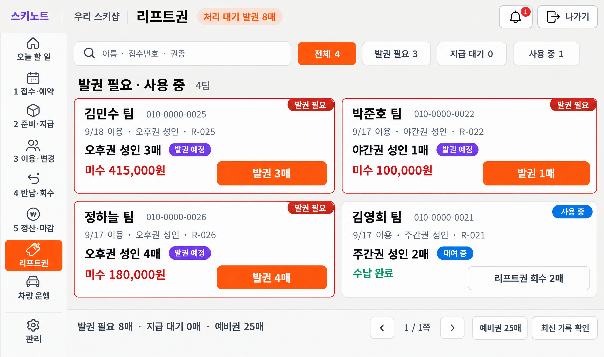
job 994055c5-d0b4-4df6-bde2-67c663bfa7bb · 힉스필드 원본
P10 · 포스 화면 · 통과(메모)차량 운행 (포스)
카운터에서 보는 차량별 배달·수거. 카드 버튼은 업무 처리, 주황은 하단 하나.
판단: 활성은 여덟째 차량 운행. 차량 선택 3칸, 카드 4장(시간 · 팀, 장소 · 차량, 물품과 상태, 남은 물품 + 업무 처리), 주황은 하단 배달할 팀 찾기 하나. 메모: 발권처 환불 카드는 배지 대신 보라 테두리로 그려짐.
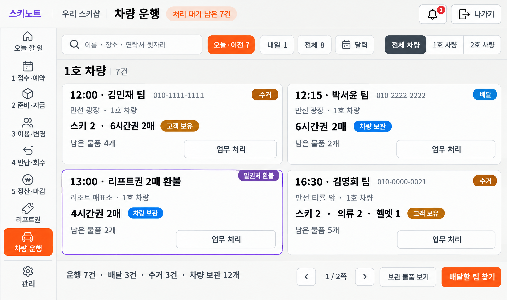
job c8606a0f-7a2c-4a72-b75e-38297ab0c518 · 힉스필드 원본
P14 · 포스 화면 · 통과사이즈 입력 현황
2 준비·지급에서 여는 화면. 팀별 사이즈 입력 상태와 재요청.
판단: 팀별 입력 현황 카드 4장: 미입력은 주황 테두리와 재요청 버튼, 입력 완료는 초록, 발송 전은 입력폼 보내기. 하단에 사이즈 집계 · 준비표 인쇄 2팀.
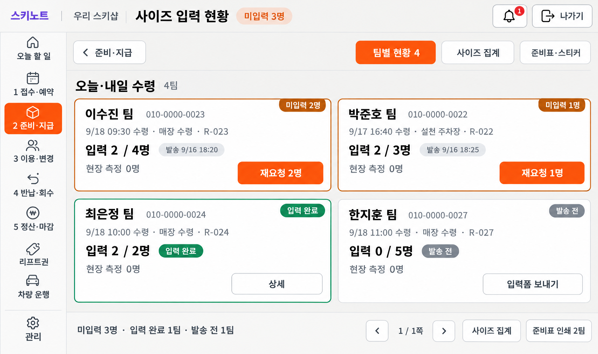
job bafdc2aa-6230-4016-a491-141685223a72 · 힉스필드 원본
P15 · 포스 화면 · 통과접수 상세 · 수납·환불
접수 상세의 둘째 탭. 청구·수납·환불·보증금·미수를 한 줄씩.
판단: 접수 상세의 수납·환불 탭: 왼쪽 요약과 버튼 6개는 그대로, 오른쪽에 대여 요금 · 수납 · 환불 · 보증금 · 미수 다섯 줄, 하단 주황 수납 105,000원.
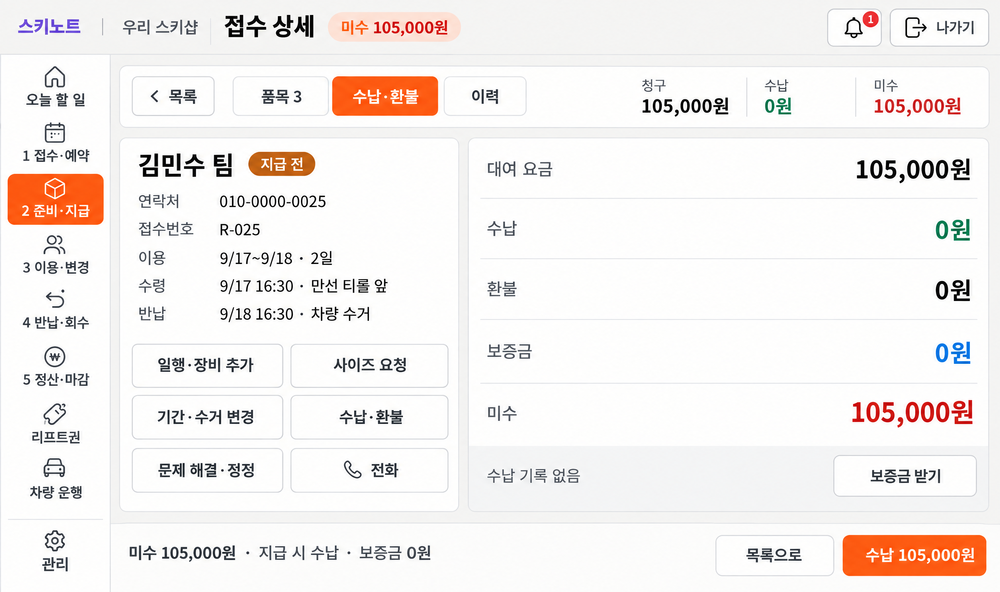
job 59d9660c-4075-4466-853d-1ba76e17de2b · 힉스필드 원본
P17 · 포스 화면 · 통과일행·장비 추가 · 1 대상
이용 중인 팀에 늦게 온 일행이나 장비를 더한다. 대표자는 다시 적지 않는다.
판단: 대표자는 고정 표시(김민수 팀 · 이용 중), 추가 대상 · 수령일 선택 버튼, 새 일행 수 −/+, 오른쪽 현재 접수와 미수, 하단 다음 · 품목.
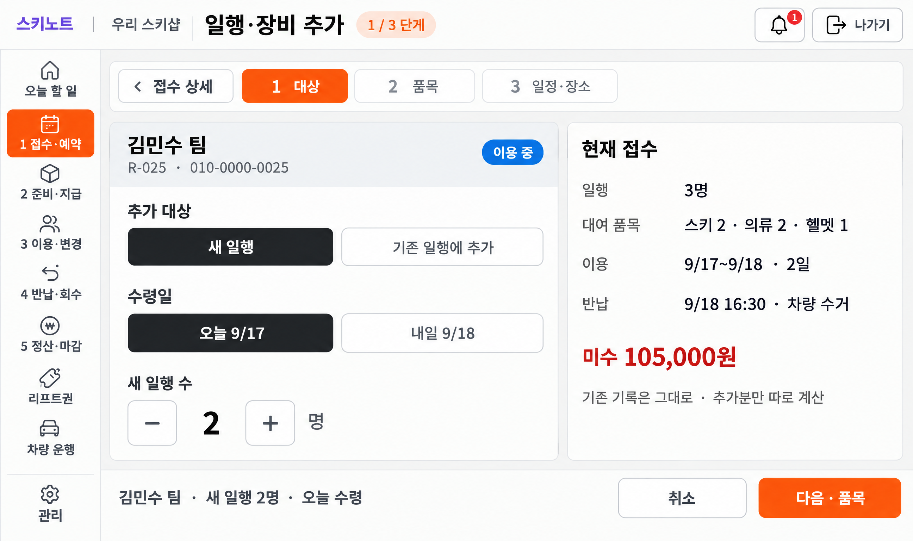
job 78f00657-7edf-4b8b-b06e-de4a2b90fd7a · 힉스필드 원본
M02 · 관리 · 통과(메모)관리 · 재고·정비
품목별 수량을 타일 6개로. 상태 변경은 타일 버튼.
판단: 관리 레일 7개, 활성은 둘째 재고·정비. 품목 타일 6개에 대여 가능 숫자와 상태 변경 버튼, 부츠만 주황 테두리(정비 중 2). 메모: 헬멧 타일의 배지 한 곳이 정상 대신 헹상으로 찍힘(다른 다섯 곳은 정상).
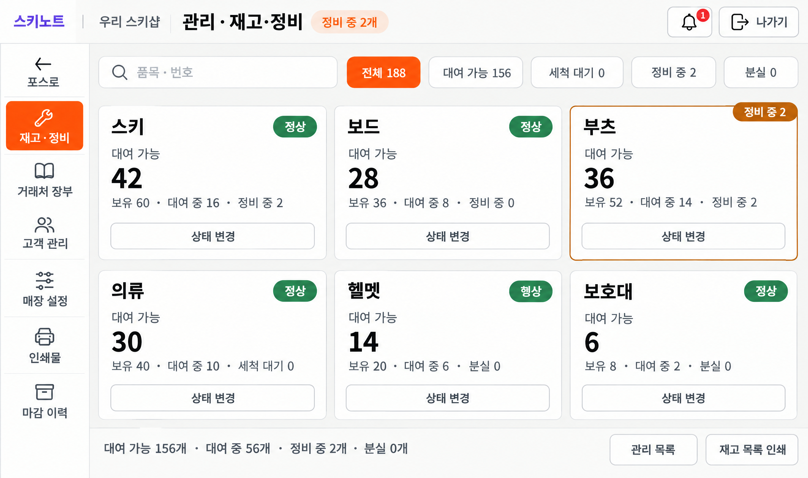
job c61cbf7e-b78a-46c2-8dbd-55d41f8d93ec · 힉스필드 원본
M03 · 관리 · 통과(메모)관리 · 거래처 장부
거래처별 미수·미지급 카드. 주황은 하단 거래 추가 하나.
판단: 거래처 카드 3장(미수 빨강 · 미지급 주황 · 정산 완료), 주황은 하단 거래 추가 하나. 메모: 헤더 알약이 정산 대기 대신 정산 대거로 찍힘, 카드가 2열이 아니라 3열 한 줄로 그려짐(구현은 2열).
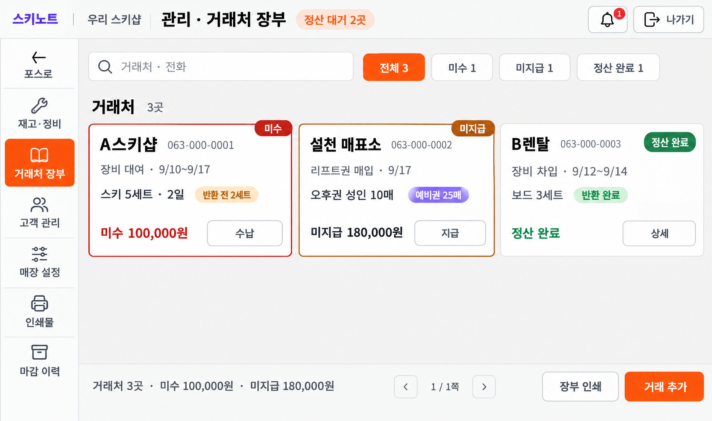
job 22da4ab4-eef1-4af7-b04f-18e580acd26c · 힉스필드 원본
M04 · 관리 · 통과관리 · 거래처 상세
거래처 한 곳의 장부. 접수 상세와 같은 좌우 배치.
판단: 접수 상세와 같은 좌우 배치: 왼쪽 거래처 요약과 버튼 6개, 오른쪽 품목 카드(대여 5 · 반환 3 · 미반환 2)와 금액 세 줄, 하단 주황 수납 100,000원.
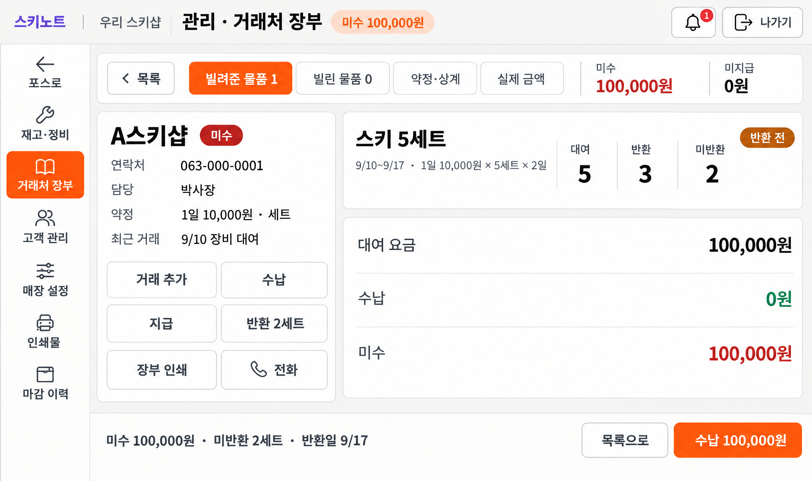
job 5ebfd35e-fd4a-4db4-9959-fa157336ca45 · 힉스필드 원본
M05 · 관리 · 통과관리 · 고객 관리
고객 카드. 미수와 연락처 미등록을 테두리로 구분.
판단: 고객 카드 4장: 미수 2명은 빨간 테두리, 연락처 미등록은 주황 테두리와 연락처로 확인 버튼. 하단에 주황 없음(동명이인 확인 · 명단 인쇄).
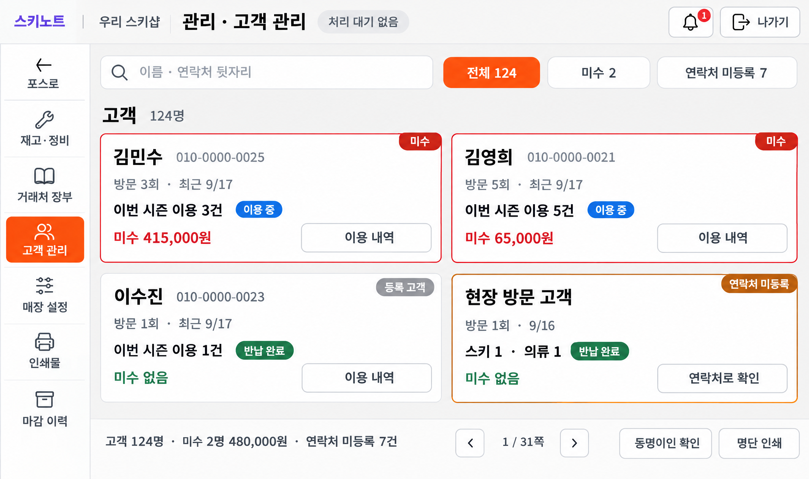
job c977f5e2-b9b2-44a6-85eb-715ac78c27af · 힉스필드 원본
M06 · 관리 · 통과관리 · 매장 설정
왼쪽 항목 7개, 오른쪽 행 목록과 쪽수.
판단: 왼쪽 항목 7개(장비 요금 선택), 오른쪽 요금 5줄과 수정 버튼, 아래 쪽수 1 / 2쪽, 하단 주황 품목 추가.
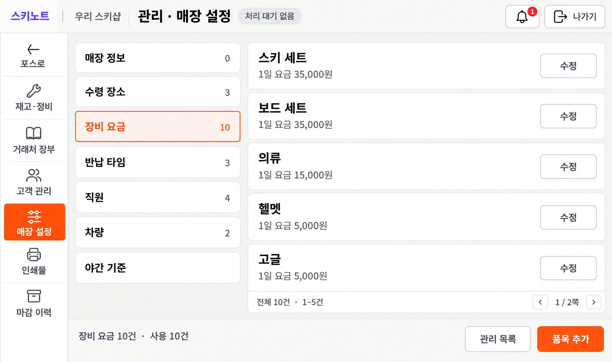
job 710e2713-b97f-4682-bbe2-a8ee881b1410 · 힉스필드 원본
M07 · 관리 · 통과관리 · 인쇄물
준비표·스티커·QR 안내문. 왼쪽 목록, 오른쪽 미리보기.
판단: 준비표 · 스티커 · QR 안내문 탭, 왼쪽 시간대별 준비표 3줄과 인쇄 버튼, 오른쪽 A4 미리보기, 하단 주황 모두 인쇄 6장.
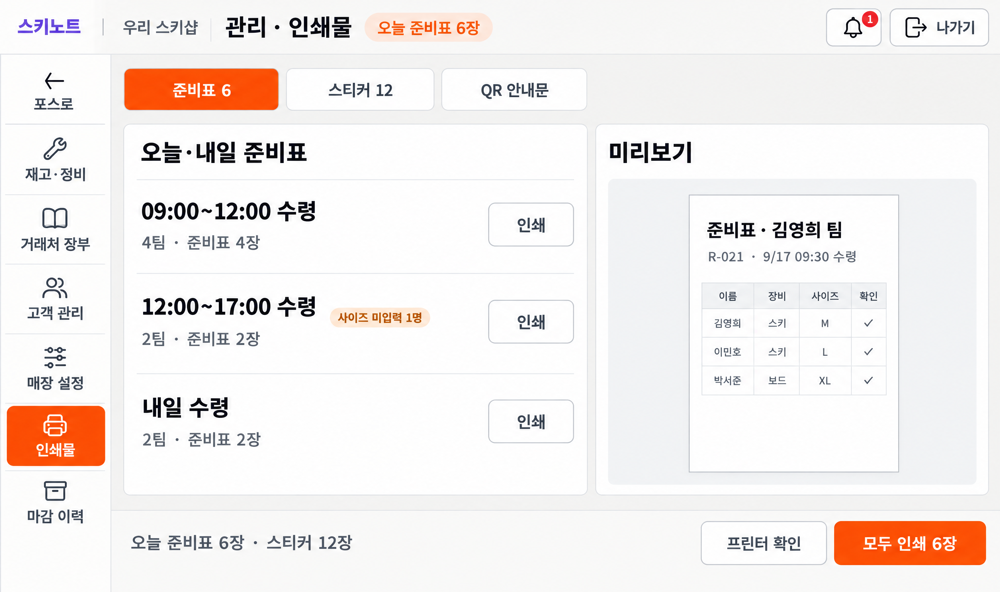
job 282be4fd-0029-4ce8-9f1a-6f05af41c2bf · 힉스필드 원본
M08 · 관리 · 통과관리 · 마감 이력
날짜별 마감 카드. 오늘만 마감 확정(주황).
판단: 날짜별 마감 카드 4장: 오늘만 빨간 테두리와 주황 마감 확정, 나머지는 마감표 인쇄. 현금 차이 −20,000원은 빨강. 하단에 마감 재개 · 정산·마감.
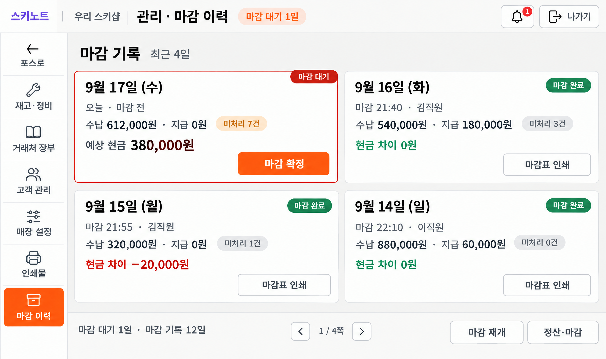
job 08f03216-2646-439b-8013-1c463884d4ba · 힉스필드 원본
D02 · 기사 태블릿 · 통과기사 태블릿 · 배달·수거 처리
한 팀의 전달 수량을 −/+ 로 고르고 큰 보라 버튼으로 확정.
판단: 기사 화면. 팀 정보 줄과 전화, 품목 2줄의 큰 −/+ 수량, 미수 안내 띠, 하단 업무 목록 · 출발 문자 · 못 받음·고객 부재와 큰 보라 실제 전달 확정 3개.
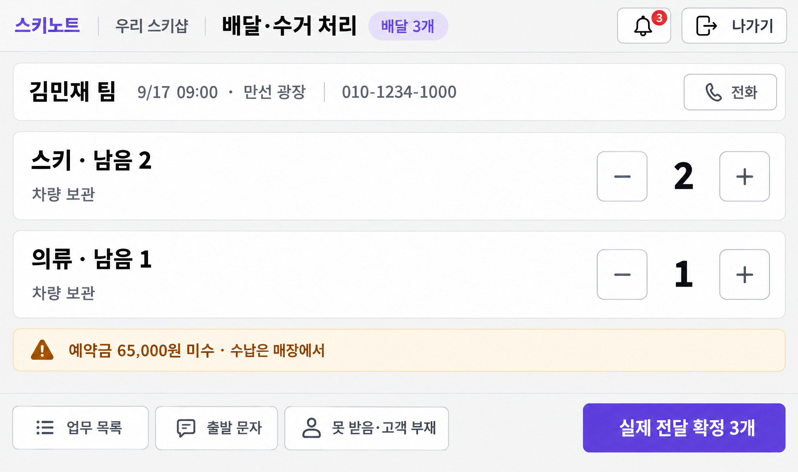
job ad282bec-bb3c-4302-98be-b795ffae040c · 힉스필드 원본
D03 · 기사 태블릿 · 통과기사 태블릿 · 차량 보관
지금 차에 실린 물품. 큰 숫자 4칸과 행 목록.
판단: 기사 화면. 큰 숫자 4칸(장비 · 의류 · 헬멧 · 리프트권), 품목 4줄과 상태 배지, 하단 업무 목록과 큰 보라 매장 입고 8개.
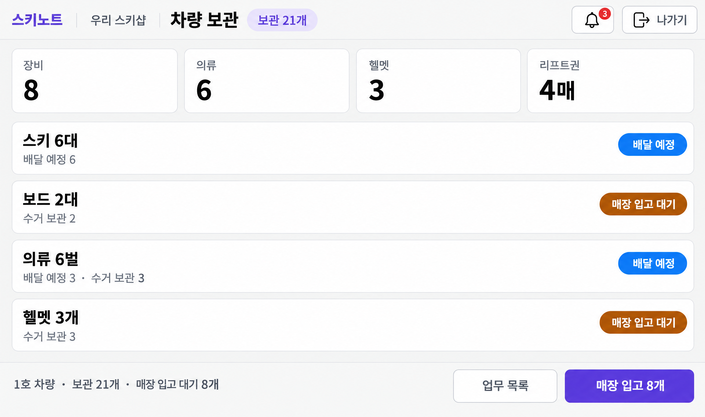
job 577f76b0-1eca-4709-9f5e-18ab05437d74 · 힉스필드 원본
P21 · 팝업 · 통과팝업 · 수납
금액은 숫자판으로. 수납 방법은 큰 선택 버튼.
판단: 접수 상세 위 팝업. 왼쪽 미수 · 수납 방법(현금 선택) · 받은 금액 · 빠른 금액 3개, 오른쪽 숫자판, 하단 취소와 주황 수납 확정 · 105,000원.
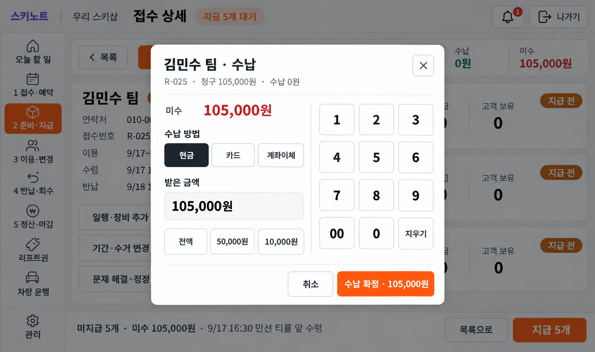
job c3f4e8c8-e3f4-4b61-b382-29d21019d014 · 힉스필드 원본
P22 · 팝업 · 통과팝업 · 반납 확인
받은 수량을 −/+ 로. 모두 받음이 주 버튼, 일부만 받음은 보조.
판단: 4 반납·회수 위 팝업. 품목 3줄의 −/+ 수량, 미수 · 반납 시 수납 줄, 하단 취소 · 일부만 받음과 주황 모두 반납 확정.
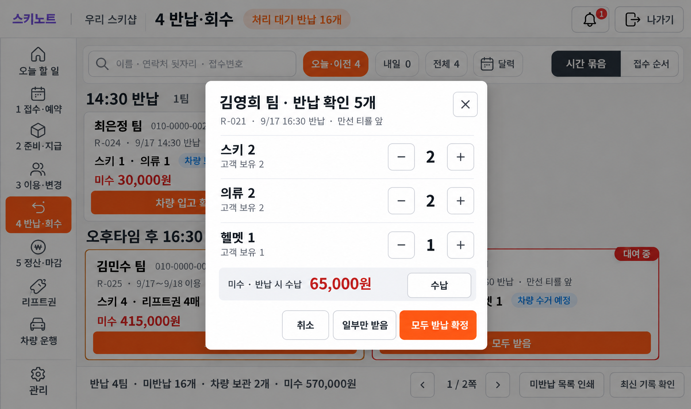
job 880df46b-4f98-4971-b387-99f614a76234 · 힉스필드 원본
P24 · 팝업 · 통과팝업 · 반납 일정 변경
날짜·장소·시간을 선택 버튼으로 바꾼다.
판단: 3 이용 중·변경 위 팝업. 반납일 · 반납 장소 · 반납 시간을 선택 버튼으로, 아래에 변경 후 반납과 추가 금액, 주황 반납 일정 변경 · 9/18 22:00.
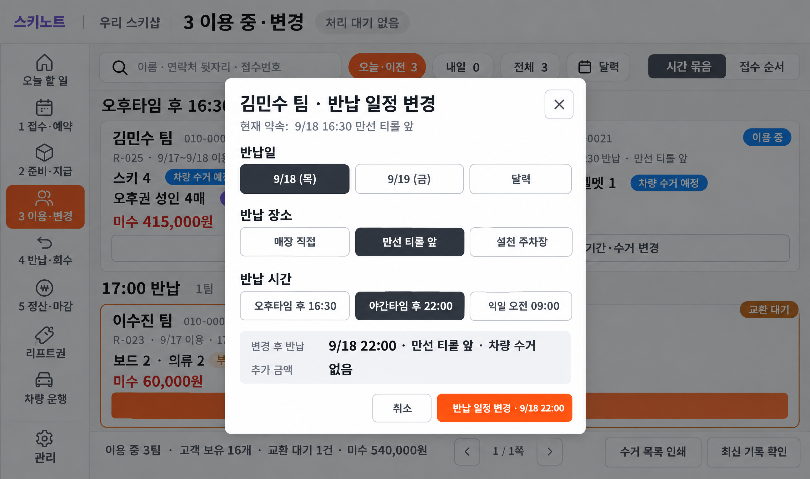
job f909b7f3-f45c-434b-9a20-426054f8f3f5 · 힉스필드 원본
P25 · 팝업 · 통과(메모)팝업 · 교환
사이즈를 큰 버튼으로 고른다. 현재 사이즈는 눌리지 않게 표시.
판단: 교환 사이즈 8칸(현재 265는 회색으로 눌리지 않게, 270 선택), 교환 내용과 추가 금액 없음, 주황 교환 확정 270mm. 메모: 어둡게 깔린 배경 화면의 글자 일부가 뭉개짐(팝업 내용과 무관).
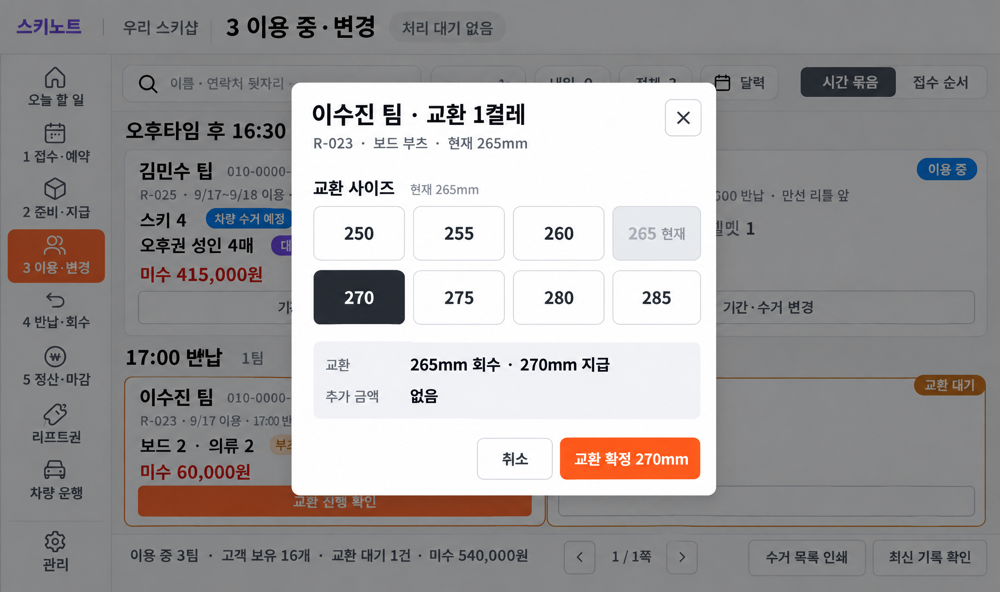
job e7e4e3c0-17c4-42ed-969c-a140d4622f55 · 힉스필드 원본
P26 · 팝업 · 통과팝업 · 문제 해결·정정
무슨 문제인지와 대상 품목을 고른다. 타이핑 없음.
판단: 처리 선택 6칸(파손 선택)과 대상 품목 3칸, 추가 청구는 다음 단계에서 입력, 주황 다음 · 파손 내용. 타이핑 없음.
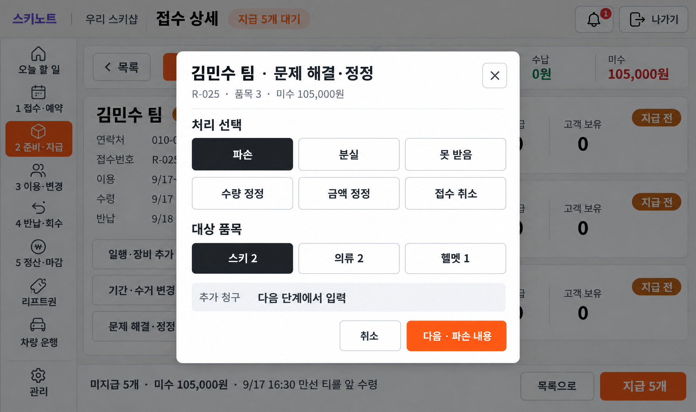
job e77be661-34f5-49f1-be54-9952aa243fd1 · 힉스필드 원본
P27 · 팝업 · 통과(메모)팝업 · 발권
예비권을 먼저 쓰고 모자란 만큼만 새로 발권.
판단: 예비권 배정 2 + 추가 발권 1의 −/+ 수량, 접수 매수 3매와 청구 120,000원, 주황 발권 3매. 메모: 어둡게 깔린 배경의 묶음 제목이 뭉개짐(팝업 내용과 무관).
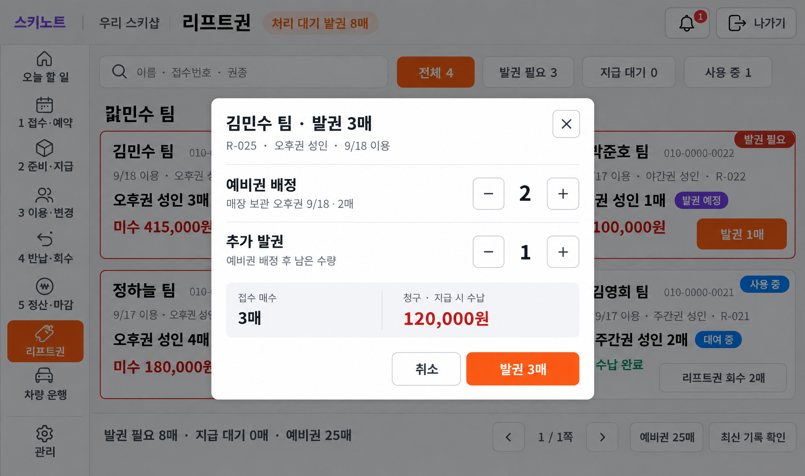
job e4cb5284-cdc2-47d8-9c70-ec197155b9af · 힉스필드 원본
P28 · 팝업 · 통과팝업 · 마감 확정
3단계 중 1단계 현금 대조. 차이는 빨간 숫자로.
판단: 3단계 표시(1 현금 대조 선택), 예상 현금 · 실사 현금(숫자판) · 차이 20,000원 빨강, 현금 차이 처리 선택, 주황 다음 · 미처리 이월.
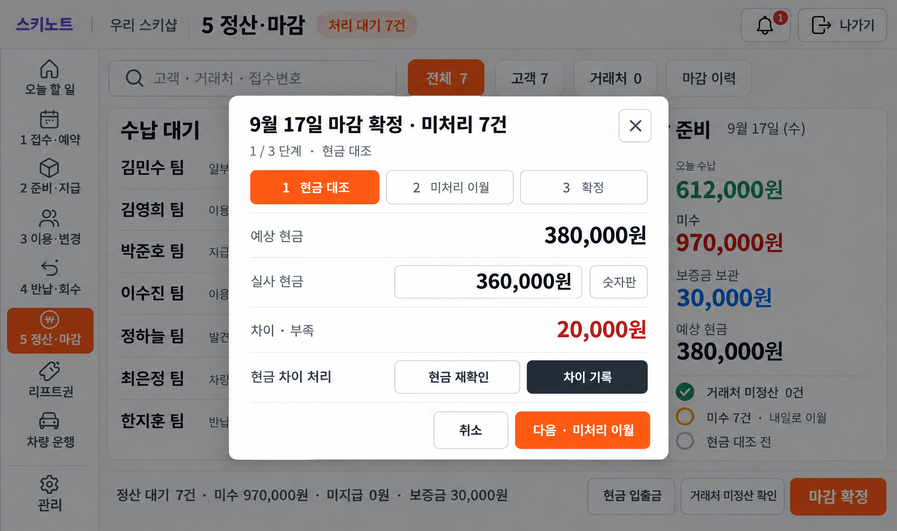
job 49b4a5c5-e426-44d2-8dc7-2d8dcbc3977f · 힉스필드 원본
P29 · 팝업 · 통과팝업 · 현금 입출금
입금/출금, 사유, 금액. 금액은 숫자판.
판단: 수납 팝업과 같은 좌우 배치. 입금|출금(출금 선택), 사유 3칸, 금액 15,000원과 출금 후 예상 현금, 오른쪽 숫자판, 주황 출금 기록 · 15,000원.
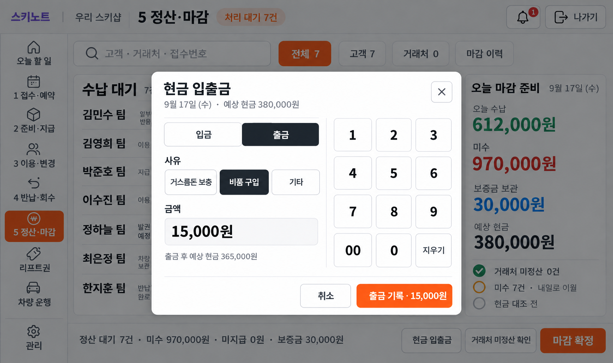
job 7af68bd6-bc70-40b1-b0b0-99bd071a974f · 힉스필드 원본
P30 · 팝업 · 통과(메모)팝업 · 달력
날짜 칸이 크고, 예약이 있는 날은 팀 수를 적는다.
판단: 2026년 9월 달력이 요일까지 맞게 그려짐(1일 화요일, 30일). 오늘(17)은 주황 테두리, 고른 날(18)은 주황 채움, 예약 있는 날에 팀 수. 하단 취소 · 오늘 · 주황 9월 18일 보기. 메모: 날짜 칸 안의 팀 수 글자가 작다(구현은 16px).
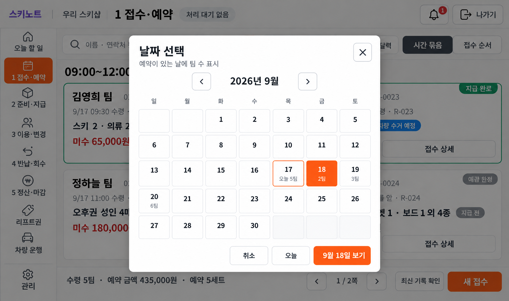
job 4c3eecde-9667-47ca-a232-9c568a343f08 · 힉스필드 원본
P31 · 팝업 · 통과팝업 · 사이즈 입력 재요청
보낼 문자 내용을 그대로 보여 주고 확인만 한다.
판단: 미입력자 · 받는 번호 · 발송 기록, 보낼 문자 내용을 그대로 보여 주고 주황 경고 띠, 하단 취소 · 현장 측정 2명 · 주황 재요청 2명.
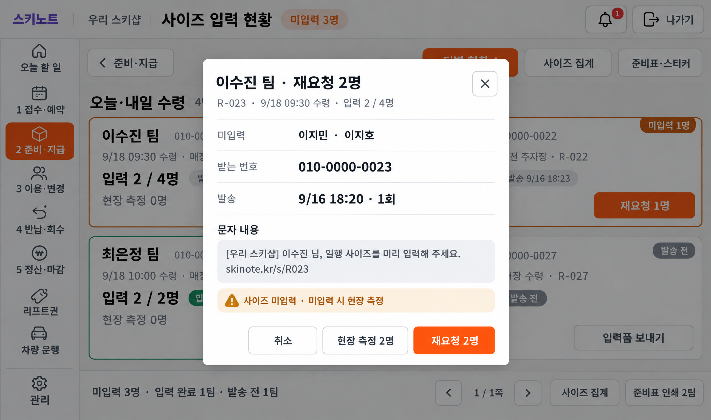
job 2e9ba97a-f155-46e2-a1f7-5b1d85191236 · 힉스필드 원본
P32 · 팝업 · 통과팝업 · 업무 알림
기사·매장에서 온 확인 요청. 주황 버튼 없이 행마다 내용 보기.
판단: 오늘 할 일 위 팝업. 미확인 2 / 전체 기록, 알림 2줄과 내용 보기, 쪽수, 하단 닫기 · 이 기기 소리 켜기 · 최신 알림. 요청대로 주황 버튼 없음.
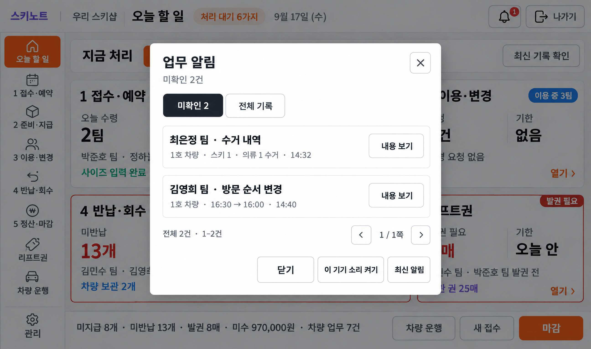
job 63495fc0-c86e-45ab-b3d1-95e17901d568 · 힉스필드 원본
P33 · 팝업 · 통과(메모)팝업 · 접수 완료
접수 직후 다음 할 일 3가지를 큰 버튼으로.
판단: 초록 체크와 접수 완료 · 260917-031, 대여 품목 · 일정 · 합계 · 사이즈 입력 요청(미발송), 같은 폭 버튼 3개 중 접수 목록만 주황. 메모: 배경 화면의 장소 글자 한 곳이 뭉개짐.
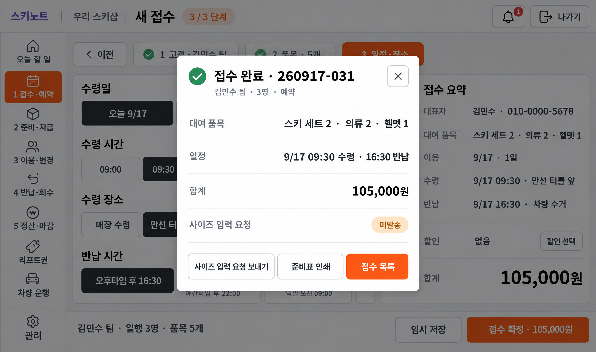
job 0ae3ab14-88c1-4b3c-a3ef-dcf9dfc1fc33 · 힉스필드 원본